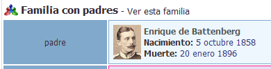
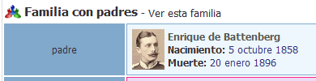

En este ejercicio hay que acabar entregando una carpeta con el nombre del alumno y que contenga:
las capturas de pantalla (que se llamen nombre_alumno_XXY.png donde X sea el número de ejercicio e Y el número de captura del ejercicio).
el fichero estilo.txt del ejercicio 6.
el fichero alias.txt del ejercicio 8.
la copia de seguridad de los datos de la aplicación del ejercicio 9.
la carpeta de la aplicación (comprimida en un zip) del ejercicio 9.
En los enunciados de los ejercicios se muestran capturas parciales como ayuda, pero las capturas que se entreguen en el examen deben ser capturas de toda la pantalla.
1. Instalar (0,5 puntos)
WebTrees es una aplicación web para crear árboles genealógicos.


 
